IES Valle del Alberche
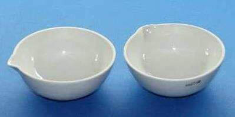
#U02c10.- Material de laboratorio: conocerlo para trabajar con seguridad
📋 ¿En qué consiste este módulo?
En el laboratorio, cada operación tiene su material. No se mide un volumen exacto con una probeta, no se calienta a 1000 °C en un vaso de precipitados y no se filtra a vacío con un embudo cualquiera. Conocer el material —de qué está hecho, para qué sirve y cómo se usa— es la primera competencia de cualquier químico.
Este módulo repasa el material general de laboratorio clasificado por el material del que está fabricado: madera, plástico, vidrio, porcelana, metal, material auxiliar e instrumentos de medida. Para cada pieza veremos qué es, para qué sirve y cómo se usa correctamente.
- El vidrio es el rey del laboratorio: inerte, transparente, resistente al calor y fácil de limpiar.
- La porcelana aguanta temperaturas altísimas y cambios bruscos de temperatura.
- El metal se usa para sujetar, soportar y calentar de forma indirecta.
- El plástico es ligero, irrompible y resistente a muchos reactivos.
- Cada material tiene su límite: usar el equivocado puede arruinar la medida o provocar un accidente.
¿Qué material elijo para medir, para calentar, para separar o para sujetar? ¿Y por qué?
🎯 ¿Qué vas a aprender?
- A clasificar el material de laboratorio según el material del que está hecho.
- A identificar las piezas principales y su uso correcto.
- A distinguir entre material volumétrico exacto (aforado) y material graduado aproximado.
- A elegir el material adecuado para medir, calentar, separar, triturar o sujetar.
- A reconocer las limitaciones de cada material: temperatura, reactivos, precisión.
- A aplicar las normas de seguridad básicas en el manejo del material de vidrio y de calefacción.
🔬 Clasificación del material de laboratorio
Porque las propiedades del material determinan para qué sirve cada pieza. El vidrio es transparente e inerte, pero se rompe. La porcelana aguanta el calor, pero es opaca. El metal es resistente, pero reacciona con ácidos. El plástico es barato y ligero, pero se deforma con el calor.
Conocer la naturaleza del material evita errores como calentar un vaso de plástico, guardar ácido fluorhídrico en vidrio o medir con una probeta cuando se necesita precisión de pipeta aforada.
| Grupo | Propiedades clave | Ejemplos típicos |
|---|---|---|
| Madera | Aislante térmico, ligera, económica | Pinza de madera, gradilla |
| Plástico | Ligero, irrompible, resistente a muchos reactivos; se deforma con el calor | Pera de succión, micropipeta, tapón, tubos Eppendorf, frasco lavador |
| Vidrio | Transparente, inerte, resistente al calor (borosilicato), frágil | Probeta, matraz aforado, bureta, vaso de precipitados, tubo de ensayo |
| Porcelana | Resistente a temperaturas muy altas y a cambios bruscos; opaca | Crisol, cápsula, mortero, embudo Büchner, triángulo |
| Metal | Resistente, conductor del calor, no apto para reactivos corrosivos | Soporte universal, pinzas, trípode, aro metálico, malla |
No todo lo que mide volumen lo hace con la misma precisión:
- Material aforado (exacto): matraz aforado, pipeta aforada, bureta. Tienen una o dos marcas y se calibran a una temperatura concreta. Se usan para preparar disoluciones y valorar.
- Material graduado (aproximado): probeta, vaso de precipitados, pipeta graduada, matraz Erlenmeyer. Tienen una escala más o menos fina, pero su precisión es menor. Se usan para medir de forma rápida y no crítica.
Material aforado (exacto)
 Matraz aforado
Matraz aforado
 Pipeta aforada
Pipeta aforada
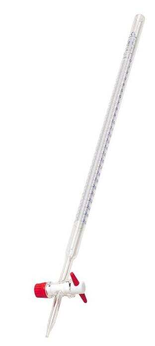
BuretaMaterial graduado (aproximado)
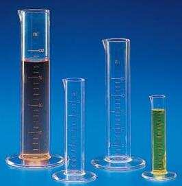
Probeta Vaso de precipitados
Vaso de precipitados
 Pipeta graduada
Pipeta graduada
 Matraz Erlenmeyer
Matraz Erlenmeyer
| Instrumento | Tipo | Precisión típica | Uso principal |
|---|---|---|---|
| Matraz aforado | Aforado | Muy alta (± 0,1 mL en 250 mL) | Preparar disoluciones exactas |
| Pipeta aforada | Aforado | Muy alta (± 0,05 mL) | Transferir un volumen exacto |
| Bureta | Aforado | Alta (± 0,05 mL) | Valoraciones |
| Probeta | Graduado | Media (± 1 mL en 100 mL) | Medir volúmenes no críticos |
| Vaso de precipitados | Graduado | Baja (± 5 mL) | Contener, calentar, disolver |
Calentar y separar son dos operaciones básicas que exigen material específico:
- Calefacción: mechero Bunsen o de alcohol, trípode, rejilla metálica, crisol, cápsula de porcelana, vaso de precipitados de borosilicato, tubo de ensayo (con pinza de madera).
- Separación: embudo en V y papel filtro (filtración por gravedad), embudo Büchner y kitasato (filtración a vacío), embudo de decantación (líquidos inmiscibles), cristalizador (cristalización), desecador (secado).
Material de calefacción
 Mechero Bunsen
Mechero Bunsen
 Mechero de alcohol
Mechero de alcohol
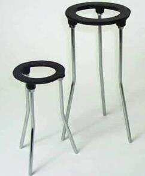
Trípode Malla metálica
Malla metálica
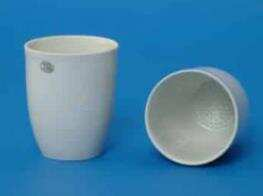
Crisol Tubo de ensayo
Tubo de ensayo
Material de separación
 Embudo en V
Embudo en V
 Papel filtro
Papel filtro
 Embudo Büchner
Embudo Büchner
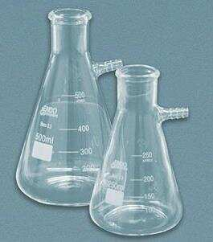
Kitasato Embudo de decantación
Embudo de decantación
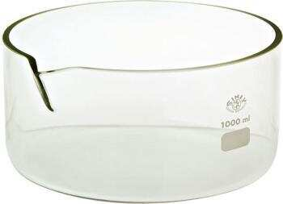
Cristalizador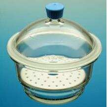
DesecadorNada de lo anterior serviría sin un buen montaje. El soporte universal, las nueces dobles, las pinzas, el aro metálico y el trípode permiten sujetar y sostener todo lo demás con seguridad.
- Pinzas de madera: para tubos de ensayo calientes (aislan del calor).
- Pinzas metálicas con nuez: para sujetar matraces, buretas, refrigerantes.
- Pinzas de crisol: para manipular crisoles y cápsulas a alta temperatura.
- Aro metálico con rejilla: para apoyar vasos y matraces sobre el mechero.
 Soporte universal
Soporte universal
 Nuez doble
Nuez doble
 Pinzas
Pinzas
 Aro metálico
Aro metálico
 Pinza de madera
Pinza de madera
 Pinzas de crisol
Pinzas de crisol
¿Cómo elegir el material adecuado? Tres preguntas clave
Antes de coger cualquier pieza del laboratorio, hazte estas tres preguntas. La respuesta te dirá exactamente qué material necesitas.
¿Necesito medir con exactitud?
Si la respuesta es sí: matraz aforado, pipeta aforada o bureta. Si es no: probeta o vaso de precipitados.
¿Voy a calentar?
Si es sí: vidrio de borosilicato, porcelana o metal. Nunca plástico ni vidrio normal. Si es no: cualquier material resistente al reactivo.
¿Qué reactivo voy a usar?
Si es corrosivo o fluorhídrico: plástico. Si es normal: vidrio. Si es fundido: porcelana.
Medir con exactitud → material aforado (matraz, pipeta aforada, bureta).
Calentar → borosilicato, porcelana o metal, con rejilla o trípode.
Separar → embudo, Büchner, decantación, cristalizador, desecador.
Sujetar → soporte universal, nuez, pinzas, aro, trípode.
🔎 Catálogo visual del material de laboratorio Pulsame
A continuación se muestra el material agrupado por el material del que está fabricado. Cada ficha incluye una imagen, el nombre y su uso principal.
🌳 Material de madera
Pinza de madera
Sirve para sujetar tubos de ensayo mientras se calientan. La madera aísla del calor y evita quemaduras.
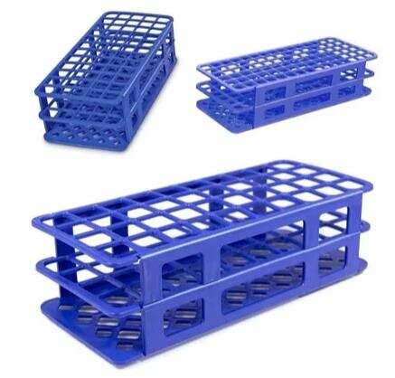
Gradilla
Soporte para colocar y almacenar tubos de ensayo. Puede ser de madera, plástico o metal.
🧴 Material de plástico

Pera de succión
Utensilio de goma con tres válvulas para pipetear líquidos con seguridad. Evita el contacto directo con la boca.
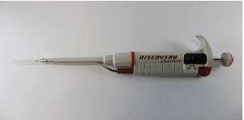
Micropipeta
Instrumento para absorber y transferir pequeños volúmenes de líquido con puntas desechables.
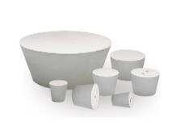
Tapón
Cierre hermético para frascos, embudos y tubos. Suele ser de caucho o goma.

Tubos Eppendorf
Pequeños tubos de plástico con tapa para microcentrífuga y biología molecular (0,2–2 mL).

Frasco lavador
Recipiente con tubo de salida para lavar material de vidrio con agua destilada.
💎 Material de vidrio
Embudo de separación
Embudo en forma de pera con llave de paso. Separa líquidos inmiscibles por diferencia de densidad.

Tubos de vidrio
Tubos lineales, en U, L, J, T o Y. Se usan para montajes, puentes salinos y recolección de gases.
Cristalizador
Recipiente cilíndrico de base plana y poca altura. Se usa para evaporar y cristalizar sustancias.
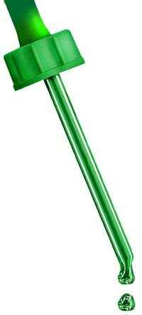
Cuentagotas
Tubo hueco con punta cónica y pera de goma. Trasvasa pequeñas cantidades de líquido gota a gota.
Embudo en V
Utensilio cónico con tallo. Se usa para trasvasar productos químicos y para filtraciones sencillas.
Probeta
Tubo alargado y graduado. Mide volúmenes con precisión media; es rápida y cómoda.
Matraz aforado
Cuello estrecho con marca de aforo. Prepara disoluciones de concentración exacta.
Matraz Erlenmeyer
Base cónica y cuello estrecho. Se usa para calentar líquidos y para valoraciones.
Kitasato
Matraz Erlenmeyer con tubuladura lateral. Se usa para filtración a vacío con embudo Büchner.
Pipeta aforada
Entrega un volumen fijo y exacto. Tiene una o dos marcas; se deja escurrir por capilaridad.
Pipeta graduada
Permite medir volúmenes variables (hasta 25 mL). Tiene una escala grabada a lo largo del tubo.

Caja de Petri
Recipiente redondo con tapa. Se usa para cultivos, observación de muestras y pesada de sólidos.

Portaobjetos
Lámina rectangular de vidrio para observar muestras al microscopio.
Bureta
Tubo cilíndrico graduado con llave de paso. Se usa para valoraciones volumétricas de precisión.

Vidrio reloj
Vidrio redondo convexo. Se usa para pesar sustancias, tapar vasos y evaporar pequeñas cantidades.
Tubo de ensayo
Tubo pequeño de fondo cóncavo. Para reacciones a pequeña escala y calentamientos suaves.

Tubo con desprendimiento lateral
Tubo de ensayo con ramal lateral. Se usa para producir o absorber gases en una reacción.
Vaso de precipitados (Beaker)
Vaso cilíndrico con pico. Sirve para calentar, disolver, recoger filtrados y preparar baños maría.

Balón de fondo redondo y plano
Matraz esférico con cuello. Contiene líquidos y se usa en destilaciones y reacciones con calentamiento.

Balón de destilación
Balón con brazo lateral. Se usa para separar líquidos por diferencia de puntos de ebullición.

Balón Kjeldahl
Balón piriforme de cuello largo. Se usa para digestiones y determinaciones de nitrógeno.
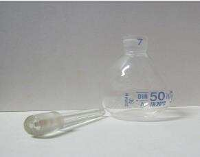
Picnómetro
Frasco con tapón capilar. Determina la densidad de líquidos con gran exactitud.
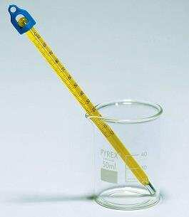
Termómetro
Mide la temperatura con precisión. Puede ser de mercurio o de alcohol.

Varilla de agitación
Cilindro macizo de vidrio. Se usa para mezclar y disolver sustancias.

Alargadera / Adaptador Claisen
Accesorio de vidrio que evita salpicaduras y pérdidas en destilaciones.
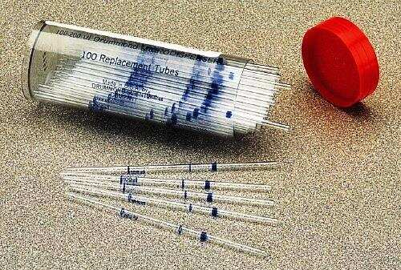
Capilar
Tubo de diámetro muy pequeño. Se usa para medir puntos de fusión y conservar pequeñas cantidades.

Campana Durham
Tubo pequeño invertido. Detecta producción de gases en microbiología.
Desecador
Recipiente cerrado con desecante. Mantiene sustancias secas y libres de humedad.

Condensador o refrigerante
Transforma vapores en líquido. Se usa en destilaciones y reflujos.
Mechero de alcohol
Fuente de calor sencilla. Se usa con trípode y rejilla para calentar sustancias.

Frasco de yodo
Erlenmeyer con tapón esmerilado. Se usa para determinar el índice de yodo en grasas y aceites.

Tubo de Thiele
Tubo en forma de b. Se usa para determinar puntos de fusión con temperatura uniforme.
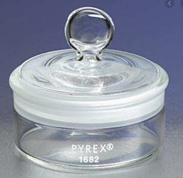
Pesasustancias
Recipiente pequeño para pesar sólidos y líquidos volátiles en la balanza.

Balón de tres bocas
Recipiente con tres bocas para montajes complejos: destilación, adición de reactivos, salida de gases.
🏺 Material de porcelana
Embudo Büchner
Embudo cilíndrico con placa perforada. Se usa para filtración a vacío con papel filtro.
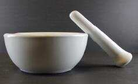
Mortero
Recipiente con mano o pilón. Sirve para machacar y triturar sustancias sólidas.
Crisol
Recipiente en forma de taza. Se usa para calentar, fundir, quemar o calcinar a altas temperaturas.
Cápsula de porcelana
Recipiente semiesférico poco profundo. Se usa para evaporar disolventes y pequeñas reacciones.

Triángulo de porcelana
Soporte triangular con tubos de porcelana. Sostiene crisoles durante el calentamiento.
🔩 Material metálico
Nuez doble
Pieza con dos tornillos. Sujeta pinzas y aros al soporte universal.
Soporte universal
Base con varilla vertical. Es el esqueleto de los montajes de laboratorio.
Pinzas
Sujetan firmemente matraces, buretas y refrigerantes mediante una nuez al soporte.
Aro metálico
Aro circular con vástago. Sostiene embudos, rejillas y recipientes que se calientan.
Pinzas de crisol
Pinza de acero inoxidable para manipular crisoles y cápsulas calientes con seguridad.
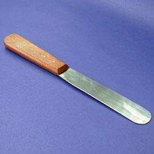
Espátula
Lámina plana con mango. Se usa para tomar pequeñas cantidades de sólidos.

Escobilla y escobillón
Cepillos para limpiar tubos de ensayo, vasos y matraces.
Trípode
Base de tres patas con aro. Sostiene la rejilla y el recipiente que se calienta.
Malla metálica
Rejilla con centro cerámico. Reparte el calor de la llama de forma uniforme.

Cucharilla de combustión
Varilla con cucharilla en el extremo. Se usa para combustionar sustancias y observar la llama.

Asas microbiológicas
Asa de metal con filamento. Se usa para transportar inóculos en microbiología.
Mechero Bunsen
Quemador de gas regulable. Es la fuente de calor principal del laboratorio.
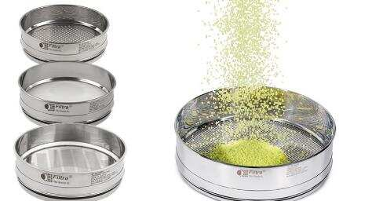
Tamices
Mallas de distinto tamaño. Separan partículas sólidas por granulometría.
📎 Material auxiliar

Papel de pH
Tiras reactivas que cambian de color según la acidez o basicidad de una disolución.
Papel filtro
Papel poroso de celulosa. Se coloca en el embudo para retener sólidos insolubles.
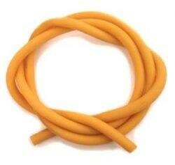
Mangueras
Tubos flexibles para conducir líquidos o gases. Se usan en condensadores, mecheros y vacío.
📐 Instrumentos de medida
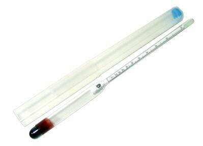
Alcoholímetro
Determina el porcentaje de alcohol de una mezcla hidroalcohólica.

Aerómetro o densímetro
Mide la densidad relativa de un líquido. Flota verticalmente en la muestra.
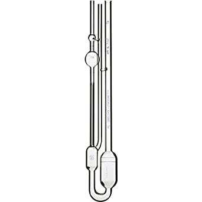
Viscosímetro
Mide la viscosidad de un fluido a temperatura controlada.
🌍 ¿Para qué sirve conocer el material de laboratorio? Pulsame
Conocer el material no es un ejercicio memorístico: es una competencia profesional y de seguridad. Estas son algunas razones por las que importa:
📏 Precisión en las medidas
Elegir material aforado o graduado según la necesidad evita errores que invalidan un análisis. Una probeta no sustituye a un matraz aforado.
🔥 Seguridad en el calentamiento
Calentar el material adecuado (borosilicato, porcelana) evita roturas y proyecciones. El vidrio normal puede estallar con el calor.
🧪 Compatibilidad química
El ácido fluorhídrico ataca el vidrio: debe guardarse en plástico. Los álcalis fuertes también dañan el vidrio con el tiempo.
💰 Ahorro y conservación
Usar cada pieza para lo que fue diseñada alarga su vida útil y evita roturas y reposiciones innecesarias.
🎓 Formación profesional
Saber nombrar y usar el material es el primer paso para trabajar en un laboratorio con autonomía y criterio.
🧭 Autonomía en el laboratorio
Cuando conoces el material, puedes diseñar montajes y resolver problemas sin depender de instrucciones paso a paso.
📊 ¿Qué has aprendido?
El material de laboratorio se elige según dos criterios: el material de fabricación y la función que va a desempeñar.
Cada pieza tiene sus propiedades y sus límites: el vidrio es inerte y transparente, la porcelana resiste el calor, el metal sujeta, el plástico es ligero, la madera aísla.
Además, has comprobado que:
- El material aforado (matraz, pipeta aforada, bureta) es el único apto para medidas exactas.
- La probeta y el vaso de precipitados son material graduado: miden, pero no con exactitud.
- El vidrio de borosilicato es el indicado para calentar; el vidrio normal no.
- La porcelana soporta temperaturas muy altas y cambios bruscos.
- El metal se usa para sujeción y soporte, no para contener reactivos corrosivos.
- El plástico es la opción para reactivos que atacan el vidrio (por ejemplo, el ácido fluorhídrico).
- La limpieza y el buen estado del material son imprescindibles para que las medidas sean fiables.
🧪 DESMITIFICANDO el material de laboratorio Pulsame
Enunciado: Necesitas preparar 250 mL de una disolución de concentración exacta. ¿Qué material volumétrico usarías? ¿Por qué no una probeta?
Enunciado: Tienes una disolución con un precipitado muy fino que tarda mucho en filtrarse por gravedad. ¿Qué material usarías para acelerar la filtración?
Enunciado: Necesitas calcinar una muestra a 900 °C. ¿Qué material de laboratorio usarías? ¿Por qué no un vaso de precipitados?
Enunciado: Explica la diferencia entre una pipeta aforada y una pipeta graduada. ¿Cuándo usarías cada una?
Enunciado: ¿Qué material usarías para pesar 0,500 g de un sólido y por qué? ¿Y si el sólido fuera higroscópico?
Enunciado: El ácido fluorhídrico (HF) ataca el vidrio. ¿En qué material debe guardarse y por qué?
Enunciado: Describe el montaje completo para calentar un vaso de precipitados con una disolución acuosa utilizando un mechero Bunsen.
Enunciado: Tienes una mezcla de agua y aceite. ¿Qué material usarías para separarlos? Explica su funcionamiento.
Un laboratorio sin material conocido es una caja de sorpresas. Conocer cada pieza, su material y su función es el primer paso para experimentar con criterio.
(Los detalles sobre lo que entra en las pruebas escritas se publicarán periódicamente en M.Teams).